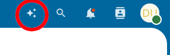
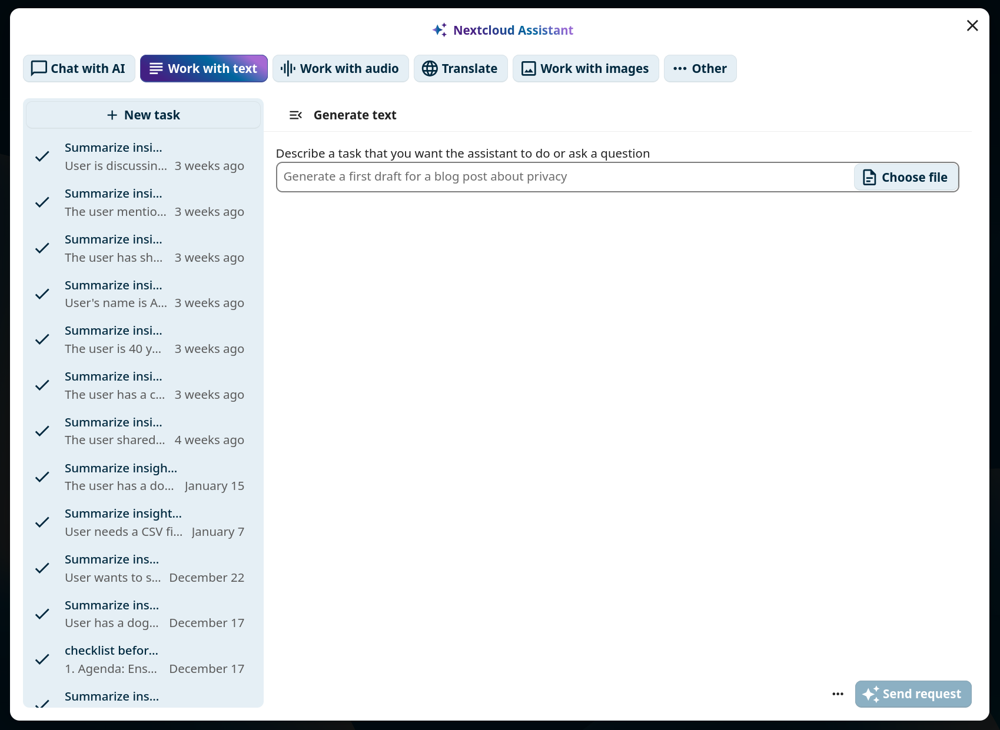
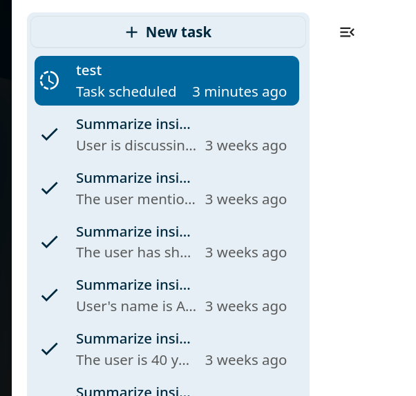
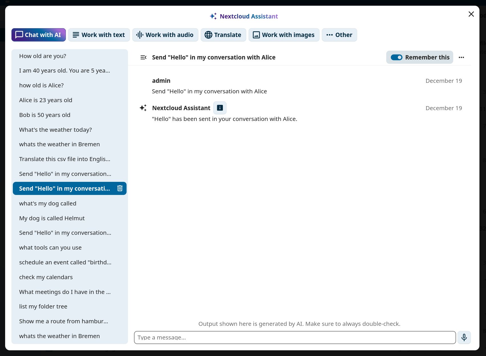
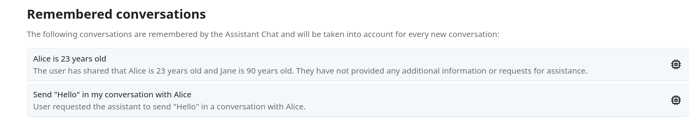

AI assistant
The Nextcloud AI assistant gives you access to AI-powered tools directly from the web interface. You can run tasks such as text summarization, image generation, and speech transcription, have back-and-forth conversations with a connected language model, and insert AI-generated content into documents and messages using smart pickers.
Megjegyzés
The AI assistant requires at least one AI backend app to be installed and configured by your administrator. See the AI assistant administration documentation for details.
Personal settings
The assistant personal settings are in Personal settings under the Artificial intelligence section. You can disable the assistant top menu entry there, and enable or disable the AI-related smart pickers.
Running a task
To open the assistant, click the assistant icon in the top-right navigation bar.

Figure 1: The assistant icon in the top-right navigation bar.
Choose a task type at the top of the assistant panel, fill in the input form, and click the submit button at the bottom right.

Figure 2: The assistant task form.
Your task will run immediately if possible, or be scheduled for later execution.

Figure 3: Waiting for task results.
Notifications
If a task was scheduled, you can request to receive a notification when it finishes. Click the View results button in the notification to display the task output.

Figure 4: Task completion notification.
Task history
The left panel of the assistant shows a task history list filtered to the currently selected task type. You can relaunch, delete, or cancel previous tasks from this list.

Figure 5: Task history in the left panel.
Chat with AI
The Chat with AI tab in the assistant lets you have a back-and-forth conversation with the connected AI. Type a message into the text field at the bottom and press Enter to send. Click New conversation to start a separate conversation thread.

Figure 6: Chat with AI interface.
Each conversation has its own context. Toggle Remember this on a conversation to add it to the AI’s long-term memory so that its context is available in any future conversation. Toggle it off again to remove the conversation from memory.
In the AI assistant section of your Personal settings, you can review all your remembered conversations.

Figure 7: Remembered conversations listed in personal settings.
Smart pickers
The assistant app provides three smart pickers accessible in Talk, Text editor, and any other
place where rich text editing is available. Type / followed by ai to see the filtered
provider list.
In Talk:

Figure 8: AI smart picker in Talk.
In Text editor:

Figure 9: AI smart picker in the Text editor.
Any result generated through the smart picker can be inserted directly into the current context.
Context Agent
When the administrator installs the Context Agent app, the AI assistant automatically gains the ability to interact with your Nextcloud apps. No additional setup is needed on your end, the agent tools become available in the same Chat with AI interface described above.
With Context Agent enabled, you can ask the assistant to perform actions across Nextcloud by typing natural-language instructions in the chat. The assistant uses „tools” behind the scenes to carry out your requests.
Megjegyzés
Available tools depend on which apps are installed on your Nextcloud instance and which tool groups your administrator has enabled. Some examples below require specific apps such as Deck, Talk, or Mail.
Example prompts
Below are examples of what you can ask the assistant to do. Combine multiple instructions in a single message and the agent will chain the necessary tools automatically.
Artificial intelligence tools
Ask a question to context chat (requires Context Chat)
Example prompt: „What is the company’s sick leave process?”
Transcribe a media file (requires Transcribe audio task type enabled)
Example prompt: „Can you transcribe the following file? https://mycloud.com/f/9825679” (Can be selected via smart picker.)
Generate documents (requires Nextcloud Office)
Example prompt: „Can you generate me a slide deck for my presentation about cats?”
Example prompt: „Can you generate me a spreadsheet with some plausible numbers for countries and their population count?”
Example prompt: „Can you generate me a pdf with an outline about what to see in Berlin?”
Generate images (requires Image generation task type enabled)
Example prompt: „Can you generate me an image of a cartoon drawing of a roman soldier typing something on a laptop?”
Calendar tools
List the user’s calendars
Example prompt: „List my calendars”
Schedule an event in the user’s calendar
Example prompt: „Schedule an event with Andrew tomorrow at noon.”
Find free times in users» calendar
Example prompt: „Find a free 1-hour slot for a meeting with me and Marco next week.”
Tasks tools
Create a task
Example prompt: „Create a task for grocery shopping with due date tomorrow.”
List tasks
Example prompt: „List my outstanding tasks”
Complete a task
Example prompt: „Mark the grocery shopping task as completed.”
Update a task’s details
Example prompt: „Change the priority of the grocery shopping task to the highest possible priority.”
Example prompt: „Change the due date of my work report task to the beginning of next week.”
Delete a task
Example prompt: „Delete the grocery shopping task in my tasks.”
Circles/teams tools
List circles
Example prompt: „List all my teams.”
List circle members
Example prompt: „List all members of my Content Marketing team.”
Create new circle
Example prompt: „Create a new team called «Hiking group».”
Add members to circles
Example prompt: „Add Ralph to the Hiking group team.”
Remove members from circles
Example prompt: „Remove ralph from the Hiking group team.”
Change circle details
Example prompt: „Change the name of the Hiking group team to «Outdoor group».”
Example prompt: „Add the following description to the Hiking group team: We go hiking together once a month. Come join us.”
Delete a circle
Example prompt: „Delete the Hiking group team.”
Share a file with a circle
Example prompt: „Share my Hiking plans.md file with the Hiking group team.”
Contacts tools
Find a contact
Example prompt: „What is Anna’s email address?”
Find a user’s ID
Example prompt: „What is Ralph’s userID?”
Find the current user’s details
Example prompt: „Where do I live?”
Cookbook tools
List recipes
Example prompt: „List my recipes.”
Search for recipes
Example prompt: „Do I have any Spaghetti recipes?”
Get recipe details
Example prompt: „Can you give me the details of my Spaghetti Carbonara recipe?”
Create a new recipe
Example prompt: „Create a recipe for Guacamole in my cookbook.”
Delete a recipe
Example prompt: „Remove the Guacamole recipe from my cookbook.”
List recipe categories
Example prompt: „Which recipe categories do I have in my cookbook?”
Deck tools (require Deck)
List deck boards
Example prompt: „List the deck boards I have access to.”
List the cards on a deck board
Example prompt: „List the cards on my Personal deck board.”
Add a new card
Example prompt: „Can you add a card with title «Repair kitchen sink» to my Personal deck board?”
Add a label to a card
Example prompt: „Can you add the label «Urgent» to the «repair kitchen sink» card in my personal deck board?”
Assign a card to a user
Example prompt: „Can you assign the «Repair kitchen sink» card in my Personal deck board to Andrew?”
Delete a card
Example prompt: „Delete the «Repair kitchen sink» card in my Personal deck board.”
List the comments on a deck card
Example prompt: „Show the comments on the «Repair kitchen sink» card in my Personal deck board.”
Add a comment to a deck card
Example prompt: „Add a comment «I’ll handle this Friday» to «Repair kitchen sink» in my Personal deck board.”
Edit a comment on a deck card
Example prompt: „Update my last comment on the «Repair kitchen sink» card to say «Moved to Saturday».”
Delete a comment on a deck card
Example prompt: „Delete my last comment on the «Repair kitchen sink» card in my Personal deck board.”
Files tools
Get contents of a file
Example prompt: „Can you fetch the following file in my documents? Design/Planning.md”
Example prompt: „Can you fetch the following file in my documents? https://mycloud.com/f/98543234”
Retrieve folder tree
Example prompt: „List my files.”
Create a public link for a file or folder
Example prompt: „Create a public link for the following file: Design/Planning.md”
Create a new file
Example prompt: „Create a new file Ideas.md in my files and fill it with ideas for hiking destinations in the black forest.”
Create a new folder
Example prompt: „Create a new folder «Hiking plans» in my files.”
Move a file
Example prompt: „Move the Ideas.md file into the Hiking plans folder.”
Copy a file
Example prompt: „Copy the Ideas.md file into my Notes folder.”
Delete a file
Example prompt: „Delete the Ideas.md file.”
Forms tools
List all forms
Example prompt: „List all the forms I have access to.”
Get details of a form
Example prompt: „Can you give me all details about the Retreat signup form?”
Add a question to a form
Example prompt: „Add the following question to the retreat signup form: «Number of days attending».”
Retrieve all responses of a form
Example prompt: „List all responses to the Retreat signup form.”
Update form settings
Example prompt: „Make the Retreat signup form expire end of next week.”
Delete a form
Example prompt: „Delete the Retreat signup form.”
Bookmarks tools
List all bookmarks
Example prompt: „List all my bookmarks.”
Add a bookmark
Example prompt: „Add a bookmark for https://nextcloud.com with title «Nextcloud homepage».”
Delete a bookmark
Example prompt: „Delete the bookmark for https://nextcloud.com.”
Update a bookmark
Example prompt: „Change the title of the bookmark for https://nextcloud.com to «Nextcloud official homepage».”
Example prompt: „Add the tag «cloud» to the bookmark for https://nextcloud.com.”
Example prompt: „Remove the tag «cloud» from the bookmark for https://nextcloud.com.”
Example prompt: „Put the bookmark for https://nextcloud.com into the «work» folder.”
List bookmark folders
Example prompt: „Which bookmark folders do I have?”
Create a bookmark folder
Example prompt: „Create a bookmark folder called «work».”
List bookmark tags
Example prompt: „Which bookmark tags do I have?”
Search tools
All search providers in Nextcloud are also automatically available as tools.
Search for files
Example prompt: „List all the powerpoint presentations in my files with file ending pptx.”
Talk tools (require Talk)
List the user’s talk conversations
Example prompt: „List my talk conversations”
List messages in a talk conversation
Example prompt: „List the latest messages in my conversation with Andrew”
Send a message to a talk conversation
Example prompt: „Can you send a joke to Andrew in talk?”
Create a public talk conversation
Example prompt: „Can you create a new public talk conversation titled «Press conference»?”
Reply to a specific message in a talk conversation
Example prompt: „Reply to Andrew’s last message in our talk conversation with «Got it, thanks!»”
Add an emoji reaction to a message in a talk conversation
Example prompt: „React with 👍 to Andrew’s last message in our talk conversation”
Remove an emoji reaction from a message in a talk conversation
Example prompt: „Remove my 👍 reaction from Andrew’s last message”
List the reactions on a message in a talk conversation
Example prompt: „Who reacted to Andrew’s last message in our talk conversation?”
Create a poll in a talk conversation
Example prompt: „Create a poll in the «Team standup» conversation asking «Which day works for the offsite?» with options Monday, Tuesday, Wednesday”
Get the question, options, and current results of a poll in a talk conversation
Example prompt: „Show the current results of the offsite poll in the «Team standup» conversation”
Cast a vote on a poll in a talk conversation
Example prompt: „Vote for Tuesday on the offsite poll in the «Team standup» conversation”
Close a poll in a talk conversation
Example prompt: „Close the offsite poll in the «Team standup» conversation”
Share a Nextcloud Files item to a talk conversation
Example prompt: „Share the file «Q3 plan.pdf» to my conversation with Andrew”
List items of a given type (e.g. file, location, poll) that were shared in a talk conversation
Example prompt: „List the files shared in my conversation with Andrew”
Get an overview of items shared in a talk conversation across all types
Example prompt: „Give me an overview of what’s been shared in my conversation with Andrew”
Mail tools (require Mail)
Send an email via Nextcloud Mail
Example prompt: „Send a test email from my carry@company.com account to Andrew@company.com”
List all connected mail accounts
Example prompt: „List my mail accounts”
List all mail folders of an email account
Example prompt: „List the folders of my carry@company.com account”
List the mails in a mail folder
Example prompt: „List the last 5 mails in the inbox of my carry@company.com account”
Miscellaneous tools
Get coordinates for an Address from Open Street Maps Nomatim
Example prompt: „What are the coordinates for Berlin, Germany?”
Get the URL for a map of a location using Open Street Maps
Example prompt: „Can you show me a map of New York, please”
Get the current weather at a location
Example prompt: „How is the weather in Berlin?”
Search for youtube videos
Example prompt: „Show me the youtube video of the Nextcloud hub 10 launch.”
Search Duckduckgo
Example prompt: „Show me search results for quick pasta recipes, please.”
Determine public transport routes
Example prompt: „How can I get from Würzburg Hauptbahnhof to Berlin Hauptbahnhof?”
List all projects in OpenProject (requires the OpenProject integration)
Example prompt: „List all my projects in OpenProject, please”
List all available assignees of a project in OpenProject (requires the OpenProject integration)
Example prompt: „List all available assignees for the «Product launch» project in OpenProject”
Create a new work package in a given project in OpenProject (requires the OpenProject integration) * Example prompt: „Create a work package called «Publish release video» in the «Product launch» project in OpenProject”
Combining tools
These tools can also be combined by the agent to fulfil tasks like the following:
„How is the weather where Andrew lives?”
Uses contacts to look up Andrew’s address and then checks the weather
„How is the weather where I live?”
Look up the current user’s address and then checks the weather
„Send an email from carry@company.com to Andrew”
Uses contacts to look up Andrew’s email and then sends an email
„Which of my files are from Anna?”
Looks up Anna’s userID and searches for files that belong to her
„Send the content of my draft.md file to Andrew in Talk”
Gets the content of the file and sends it in a 1-1 Talk conversation with Andrew
Skills
Skills let you teach the Context Agent reusable instructions that it can follow whenever they are relevant. A skill is a small markdown file that describes a procedure, a set of rules, or domain-specific knowledge. Once a skill is saved, the agent automatically picks it up and applies it in future conversations without you having to repeat yourself.
Megjegyzés
Where skills are stored
Your personal skills live in your Nextcloud Files under the folder Assistant/Context Agent/Skills/.
Each skill is a subfolder containing a file called SKILL.md. The SKILL.md file starts
with a YAML frontmatter block that defines the skill’s name and description, followed by the
skill content in Markdown:
---
name: weekly-report-format
description: Formatting rules for my weekly status reports
---
When I ask you to write a weekly report, use the following structure:
1. Summary (2-3 sentences)
2. Completed tasks (bullet list)
3. Blockers
4. Plan for next week
For example, a skill named „weekly-report-format” would be stored at
Assistant/Context Agent/Skills/weekly-report-format/SKILL.md.
A typical skills folder structure looks like this:
Assistant/
└── Context Agent/
└── Skills/
├── email-tone/
│ └── SKILL.md
├── weekly-report-format/
│ └── SKILL.md
└── meeting-notes/
└── SKILL.md
Creating a skill
You can create a skill in two ways:
Manually: create a subfolder under
Assistant/Context Agent/Skills/in your Files, then add aSKILL.mdfile with the frontmatter and content shown above.Through the chat: ask the agent to create a skill for you. For example:
„Create a skill called «email-tone» that reminds you to always write emails in a friendly and professional tone.”
„Save a skill for summarizing meeting notes with action items and owners.”
The agent will create the folder and
SKILL.mdfile for you automatically.
Listing and using skills
To see which skills are available, ask the agent:
„List my skills.”
You do not need to explicitly invoke a skill. The agent reads all available skill descriptions and applies the relevant ones based on the context of your conversation.
Admin-provided skills
Your administrator can configure a global skills folder that provides skills to all users on the instance. These global skills appear alongside your personal skills.
If a global skill has the same name as one of your personal skills, your personal version takes precedence.
Using Nextcloud as an MCP server
The Context Agent app exposes your Nextcloud as a Model Context Protocol (MCP) server. This means you can connect your Nextcloud instance to external AI tools and agents such as Pi Agent, Claude Code, Hermes, OpenCode or any other MCP-compatible client and let them use the same tools that are available in the Assistant chat.
The MCP server endpoint is:
https://your-nextcloud-domain.com/index.php/apps/app_api/proxy/context_agent/mcp/
Authentication is done with an app password. You can create one in „Personal settings -> Security -> Devices & sessions”.
Connecting MCP clients
Any MCP-compatible client that supports the streamable_http transport can connect to the
Nextcloud MCP server. Point the client to the endpoint URL shown above and pass the app
password in the Authorization: Bearer <app-password> header.
Once connected, the external client can use all the same Context Agent tools, managing files, calendars, tasks, contacts, Talk conversations, and more directly from outside Nextcloud.